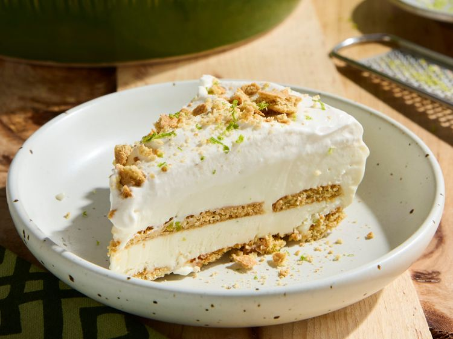

This retro key lime icebox pie is the perfect combo of flavors and textures. Simply the best summer dessert!
Step 1
Gather all ingredients.
Step 2
Whisk together sweetened condensed milk, lime zest, and lime juice in a medium bowl.
Step 3
Beat 1 cup of the cream in a medium bowl with an electric mixer on medium until soft peaks form (tips curl). Fold whipped cream into the lime mixture.
Step 4
Arrange half of the graham cracker pieces in an even layer in the bottom of a 9-inch pie plate, breaking crackers as needed to fit. Spoon half of the filling over the top and gently spread to an even layer. Top with the remaining graham cracker pieces and the remaining filling.
Step 5
Cover and freeze 4 hours or until firm. Keep remaining cream chilled until ready to serve.
Step 6
To serve, remove pie from freezer; let stand 10 minutes. To serve with the optional whipped cream: Beat remaining 3/4 cup cream, powdered sugar, and vanilla in a medium bowl with an electric mixer on medium speed until soft peaks form (tips curl). Spread or pipe whipped cream over filling. If desired, top with crushed graham crackers and key lime zest.
The whipped cream topping is optional, but provides a delicious contrast to the lime filling. For a shortcut, you could also top with store-bought whipped topping.